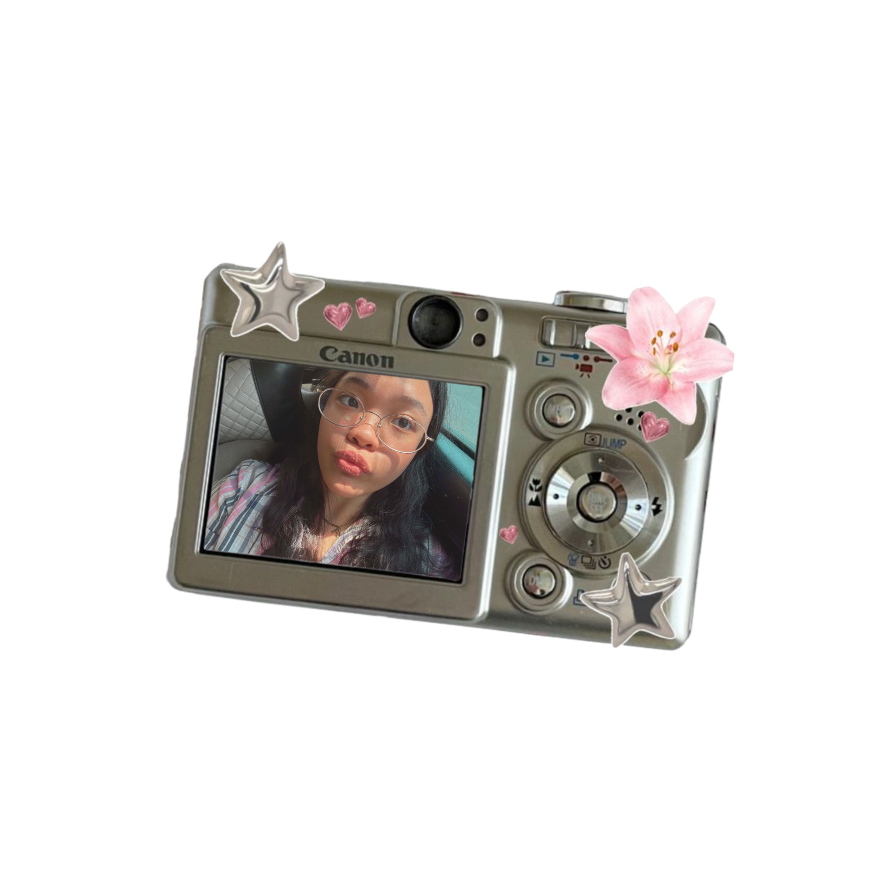

⤷ hi, i'm anne! i'm a nursing student who enjoys learning new things,
spending time with the people i care about, and finding little things
that make everyday life more enjoyable.
i would describe myself as someone who is curious, empathetic,
hardworking, and always willing to grow. i genuinely enjoy helping
people and understanding what they are going through, which is one
of the reasons why i chose nursing and hope to become a doctor someday.
i believe that caring for others is not only about having the right
knowledge and skills, but also about being able to listen, understand,
and make people feel seen and cared for.
